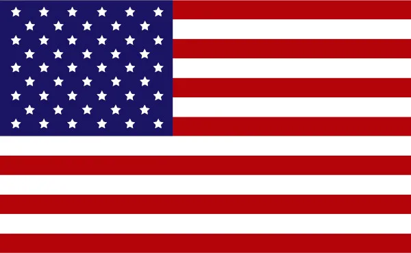

Veículos do Game
No War Thunder, aviões, helicópteros, carros de combate e navios lutam juntos em batalhas realísticas e competitivas. Pode escolher de entre cerca de 2000 veículos desde o começo do século XX aos mais modernos, em uma extensa variedade de situações de combate muitas das quais exclusivas. Você pode abater quem o persegue com as torres de um bombardeiro, ou defender os colegas de equipa de um raide aéreo com antiaéreas, abater aviões com salvas de rockets, ou até mesmo tentar afundar um navio de guerra com torpedos de uma lancha rápida.
-
Tanques
Forças Terrestres
Cerca de 900 veículos terrestres.
-
Aviões
Aviação
Cerca de 1000 aeronaves militares.
-
Navios
Fragatas armada
Cerca de 190 navios de guerra.
Nações e total de veículos
| Bandeira | Nação | Total de Veículos |
|---|---|---|
| URSS | Do rank I ao VII conta com 153 veículos de combate terrestre.177 aeronaves e 72 navios de guerra. | |
 |
Alemanha | Do rank I ao VII conta com 145 veículos de combate terrestre. 161 aeronaves e 63 navios de guerra. |
|  | EUA | Do rank I ao VII conta com 119 veículos de combate terrestre. 172 aeronaves e 67 navios de guerra. |
 |
Japão | Do rank I ao VII conta com 65 veículos de combate terrestre. 115 aeronaves e 58 navios de guerra. |
| Grã-Bretanha | Do rank I ao VII conta com 109 veículos de combate terrestre. 136 aeronaves e 73 navios de guerra. | |
 |
França | Do rank I ao VII conta com 79 veículos de combate terrestre. 86 aeronaves e 16 navios de guerra. |
 |
Itália | Do rank I ao VII conta com 75 veículos de combate terrestre. 78 aeronaves e 43 navios de guerra. |
 |
Suécia | Do rank I ao VII conta com 77 veículos de combate terrestre. 54 aeronaves e não possui navios de guerra. |
 |
China | Do rank I ao VII conta com 73 veículos de combate terrestre. 69 aeronaves e não possui navios de guerra. |
 |
Israel | Do rank I ao VII conta com 39 veículos de combate terrestre. 27 aeronaves e não possui navios de guerra. |
| ~ | ||